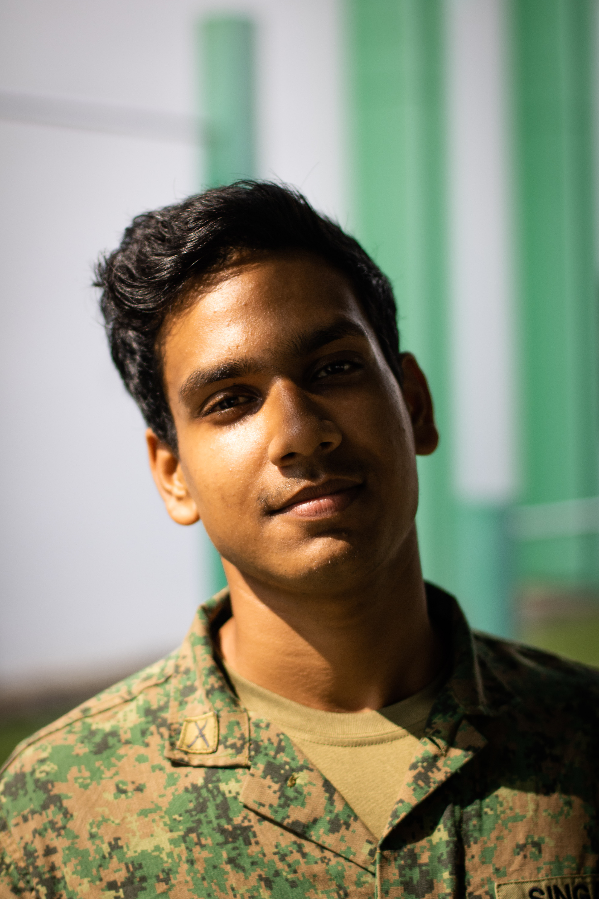
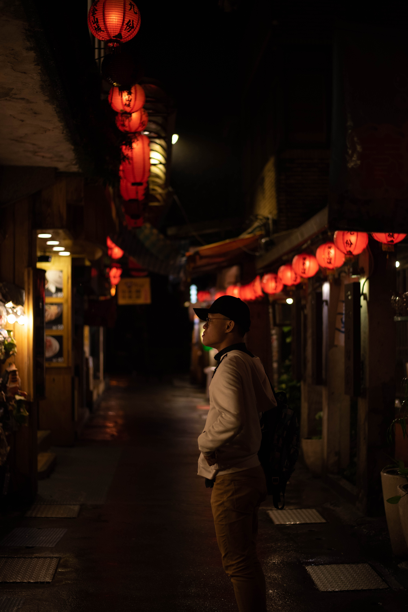
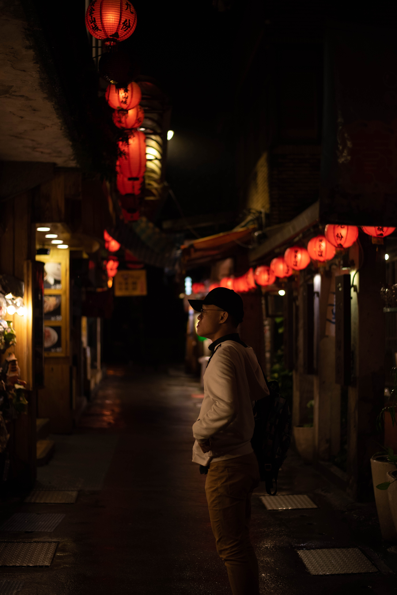

Tech Stack
Programming languages and frameworks I am familiar with


Passionate about tech startups that positively impact our community. Increasing support for startups in the region have led to a hotbed of startup activity. As I progress through my journey in tech, I am getting more excited about the technologies which are shaping the future. I hope to be a part of the ecosystem and influence the way our future is built. Incoming undergraduate at the National University of Singapore, School of Computing.
Programming languages and frameworks I am familiar with
Volunteer @ EDGE - Youth Wing of ACE
EDGE is the youth wing of the Action Community for Entrepreneurship (ACE) that support, develop, and empower youth entrepreneurs in Singapore. EDGE connects young founders, student entrepreneurship clubs, industry partners, government, and ecosystem players to grow and foster a more cohesive and collaborative youth entrepreneurship scene in Singapore.
Startup Weekend Singapore - 3rd place
Startup Weekend Singapore is a volunteer-led, non-profit community that aims to educate and provide digital innovators, global dreamers and idea architects with 54 hours of experiential startup education to kickstart their journey to change the world. Our winning idea was a platform where novice programmers could get their most frustrating programming questions answered on-demand.
I enjoy taking photos during my free time. You can find some of my best shots here: @50mm
 
